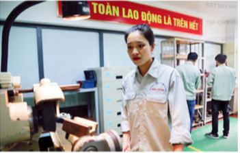

Nữ sinh tiêu biểu trong nghiên cứu khoa học
Sinh ra và lớn lên ở vùng quê thuần nông thôn Thọ Đa, xã Kim Nỗ huyện Đông Anh (Hà Nội).
Nguyễn Thị Trà( sinh năm 1998) luôn chăm chỉ học tập và 12 năm liền là học sinh giỏi.
Những năm tháng còn là học sinh Trà ấp ủ ước mơ thi vào đại học chuyên ngành cơ khí.
Giờ đây, khi ước mơ đã thành hiện thực, Trà nhớ lại:"khi chọn trường đại học để làm
hồ sơ dự thi," em được người thân giới thiệu về Trường đại học Công Nghiệp Hà Nội. Em
rất hào hứng và mong ước được học ở ngôi trường này, vì nghe nói môi trường học tập
và rèn luyện về cơ khí, chế tạo ở đây có chuyên môn cao. Tuy nhiên, điều băn khoăn lớn
của em là ở đây hầu hết là các bạn nam"
Năm 2016, Trà thi đỗ vào trường đại học Công Nghiệp Hà Nội, Khoa cơ khí, ngành học cơ khí
chế tạo máy.Đúng như lo lắng của em, cả lớp có 70 sinh viên thì mỗi mình em là con gái.
Sau này tìm hiểu thêm, Trà mới biết, thậm chí cả khóa học năm ấy, cũng chỉ có mỗi mình
em là con gái làm hồ sơ đăng kí dự thi vào trường. Tuy nhiên, không vì thế mà bị phân tâm,
em nhanh chóng quen trường, lớp và bị cuốn hút bởi nền nếp học tập nghiêm túc của các bạn
và các bài giảng chuyên sâu của giảng viên. Đó cũng là lý do đưa em đến với nghiên cứu khoa
học.Ngay trong năm học đầu tiên Trà bắt đầu tham gia nghiên cứu khoa học với đề tài:"Nghiên
cứu, tính toán , thiết kế máy đánh bóng kim loại".Bằng nỗ lực của bản thân và các bạn trong nhóm
nghiên cứu, đề tài đã đoạt giải khuyến khích của trường. Trà cũng nhiệt tình tham gia hoạt động
đoàn từ năm học đầu tiên. Là thành viên nữ duy nhất của lớp ham mê nghiên cứu khoa học. Trà luôn
được thầy bí thư đoàn của khoa hướng dẫn giúp đỡ tận tình.